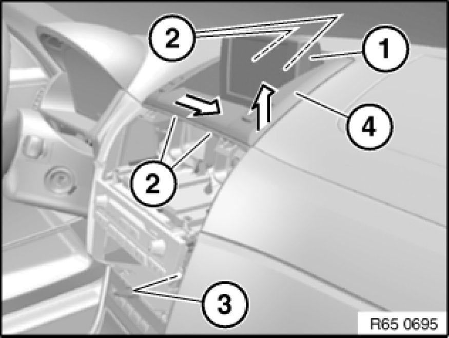

Driver/Vehicle Information Display: Service and Repair
65 50 055 - Removing and installing/replacing central information display

Necessary preliminary tasks:
- Remove operator unit for heater/air conditioner

Fold monitor (1) open.
Loosen screws (2).
Unlock plug connection for central information display (3) and disconnect.
Raise central information display (4) on passenger side.
Feed out associated wiring harness and remove central information display (4).
Installation:
Make sure wiring harness of central information display (4) is correctly routed.